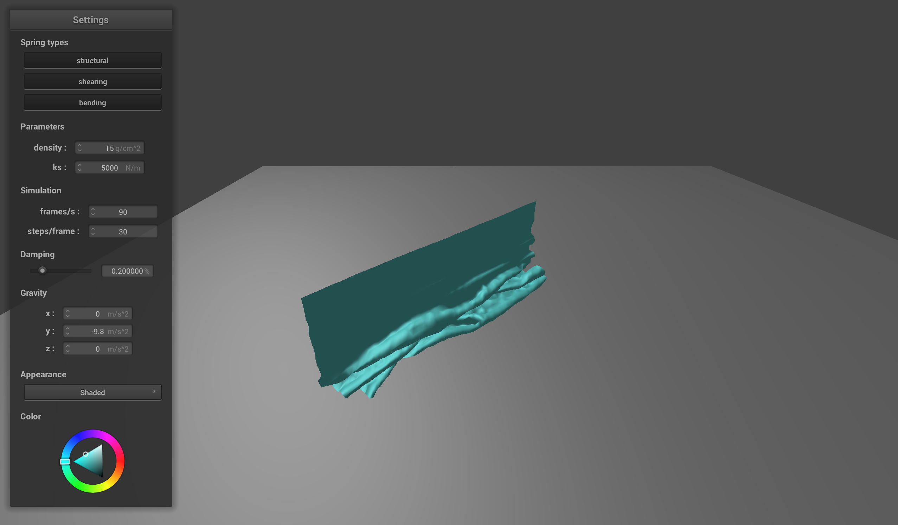
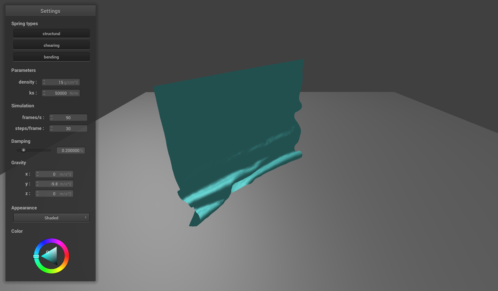
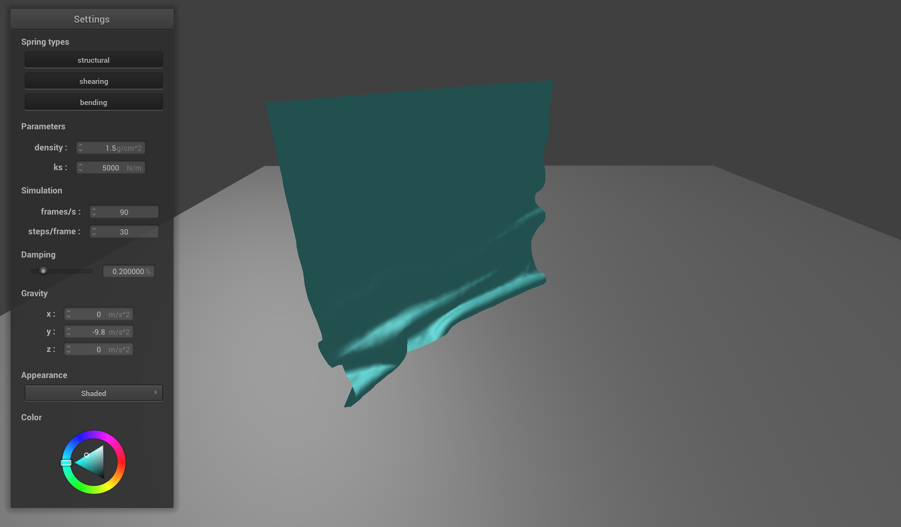
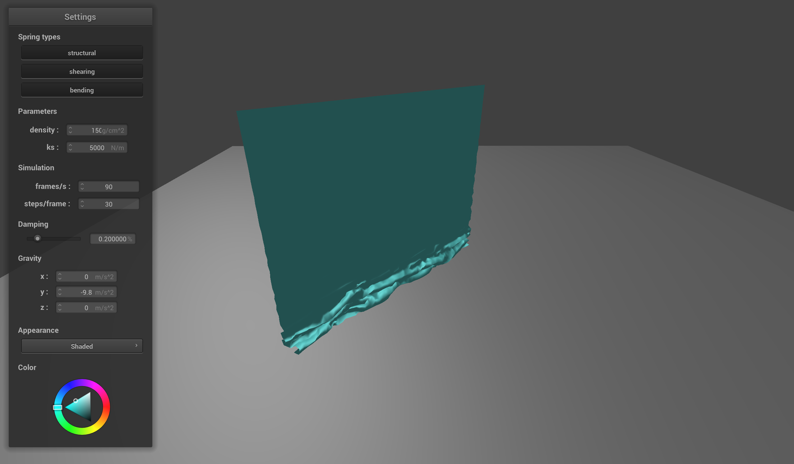
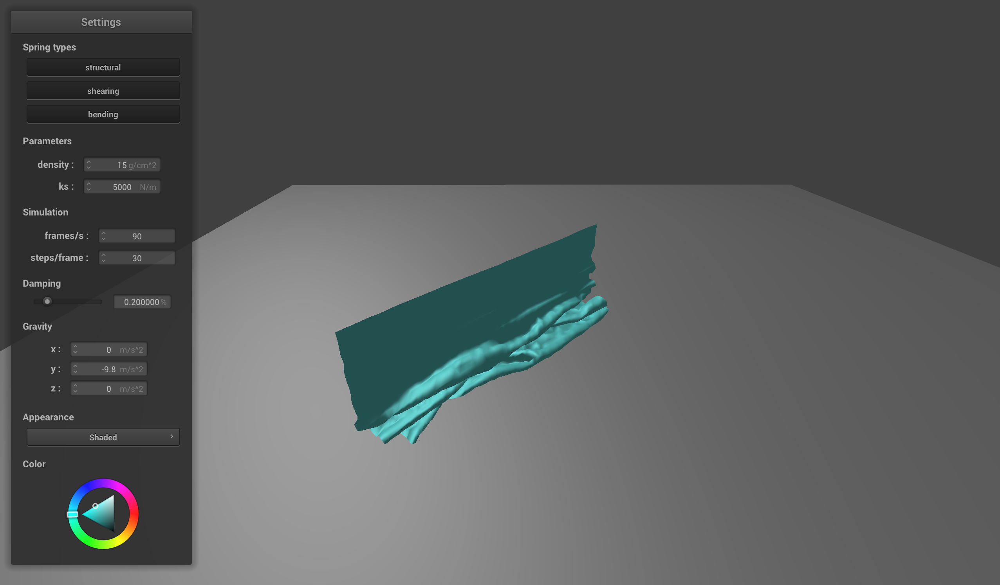
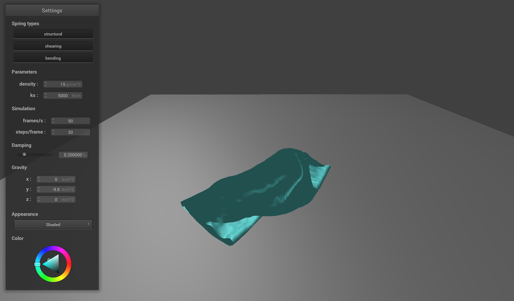
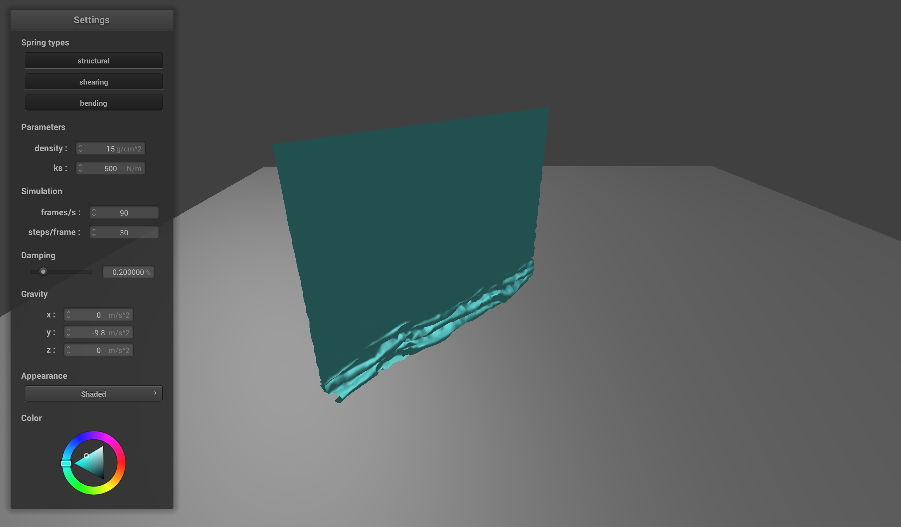
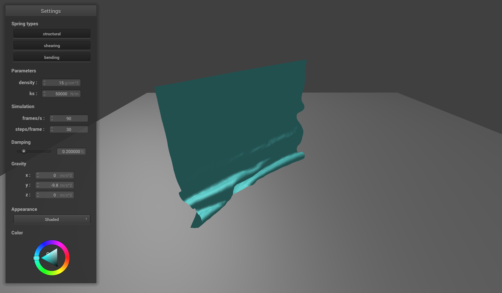
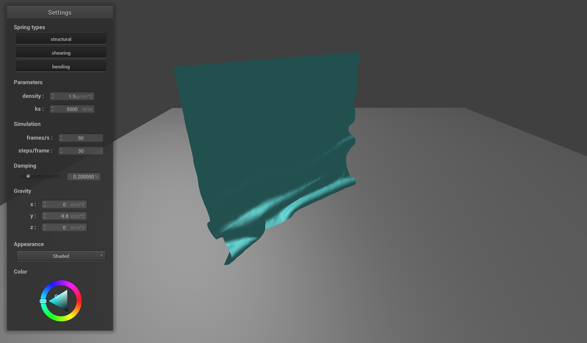
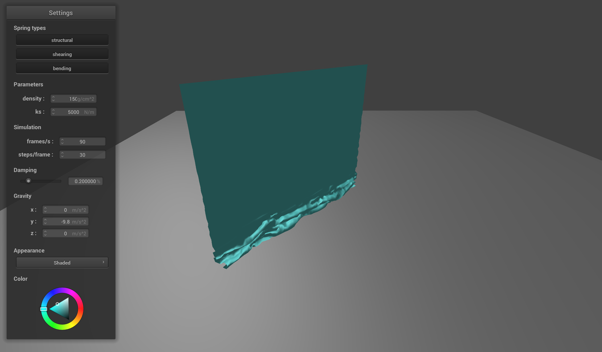

Part 4
Handling self-collisions
Results!

Default
ks=500
ks=50000
density=1.5
density=150


ks=500
ks=50000
density=1.5
density=150
Observations
We see expected results for different spring constant and density values. In both our low spring constant cloth and high density cloth, we see that there are many more folds. This is because a low spring constant means that there will be less tension between the point masses, so more folds will be allowed and will be generally easier to form. A high density value means that there are more points within a certain area, which means that we will have a finer level of detail, causing more folds to occur. On the other hand, our high spring constant cloth and low density cloth both show less and larger folds. This is because a high spring constant means that there is more tension between point masses, making it harder for folds to form. Also, a lower density value means that the points are more spread out, preventing more detailed folds from occurring.
- © Untitled
- Design: HTML5 UP
We see expected results for different spring constant and density values. In both our low spring constant cloth and high density cloth, we see that there are many more folds. This is because a low spring constant means that there will be less tension between the point masses, so more folds will be allowed and will be generally easier to form. A high density value means that there are more points within a certain area, which means that we will have a finer level of detail, causing more folds to occur. On the other hand, our high spring constant cloth and low density cloth both show less and larger folds. This is because a high spring constant means that there is more tension between point masses, making it harder for folds to form. Also, a lower density value means that the points are more spread out, preventing more detailed folds from occurring.
- © Untitled
- Design: HTML5 UP